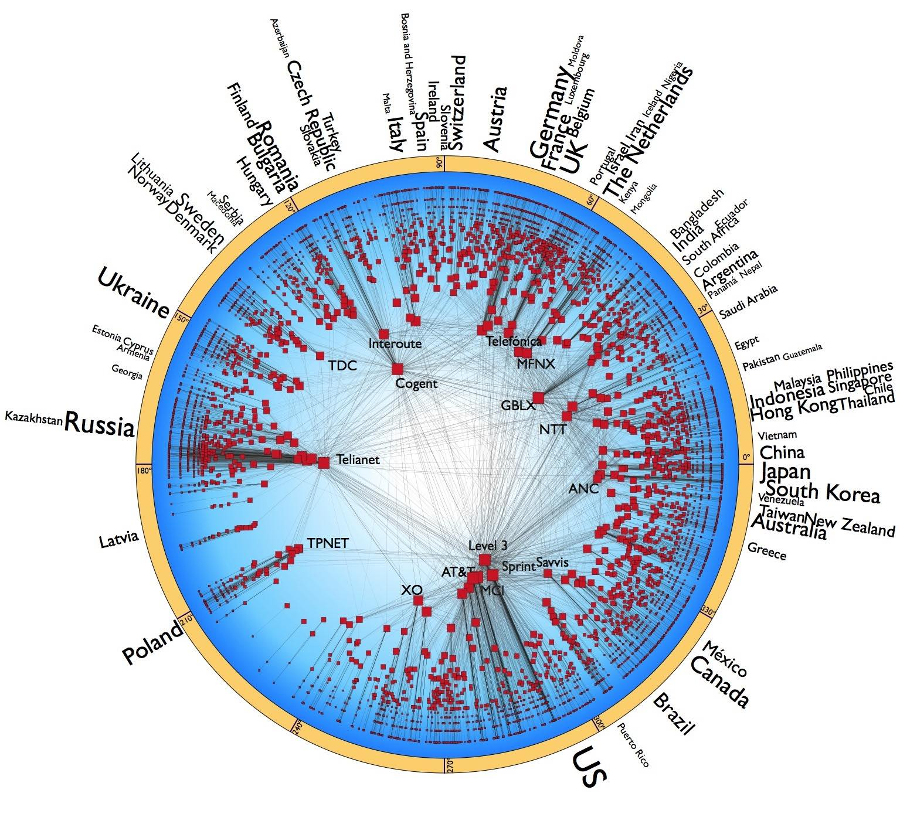
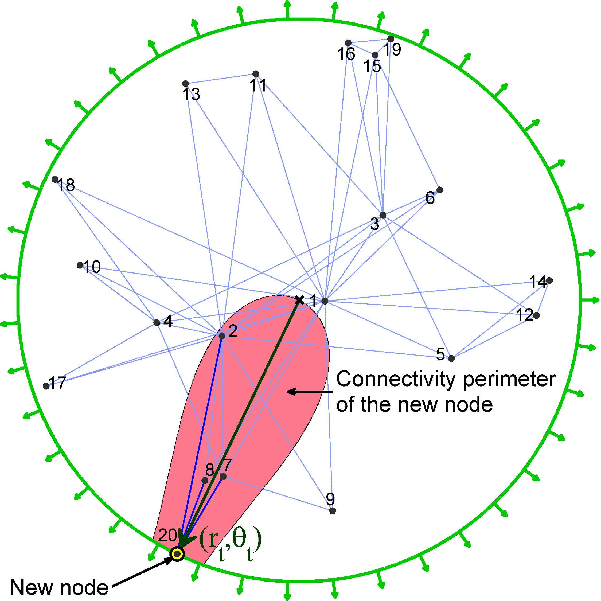
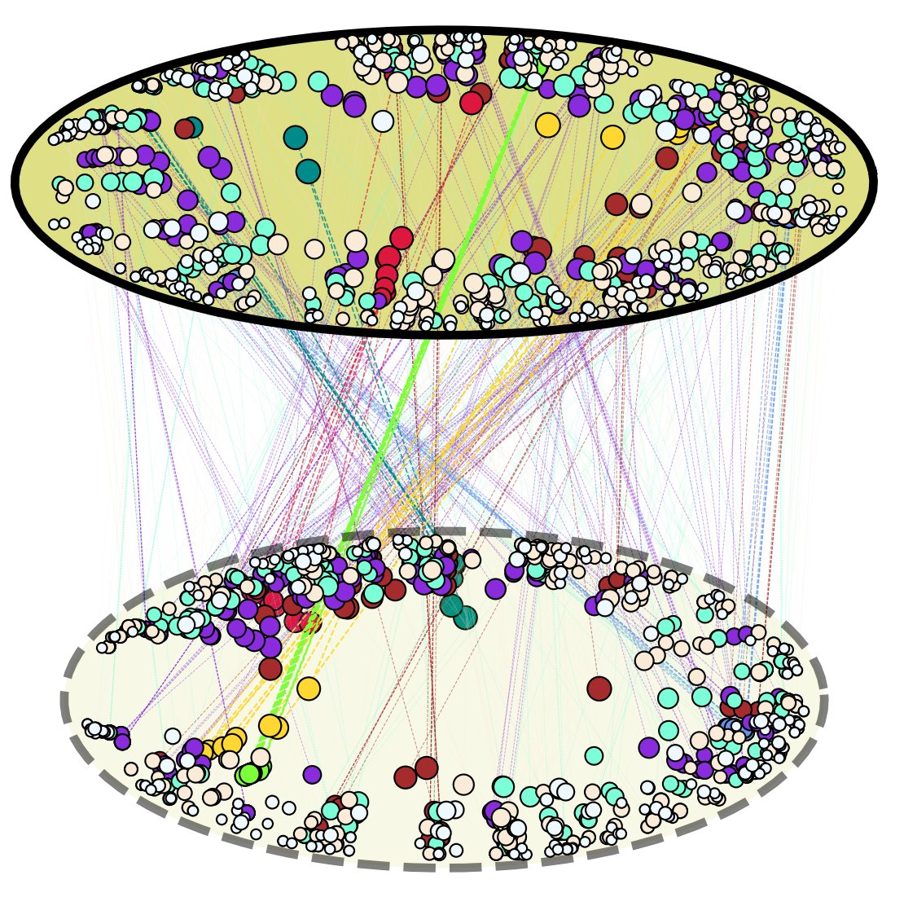

Fragkiskos Papadopoulos
- Professor
- Department of Electrical Engineering, and Computer Science and Engineering
- Cyprus University of Technology
Bio
I am a Professor in the Department of Electrical Engineering, and Computer Science and Engineering at Cyprus University of Technology. I was previously an Associate Professor (2020-2025), Assistant Professor (2015-2020) and Lecturer (2011-2015) in the same department. I received the Diploma in Electrical and Computer Engineering from the National Technical University of Athens (2002), and the MSc and PhD degrees in Electrical Engineering from the University of Southern California (2004, 2007). Additionally, I was a postdoctoral researcher at the Center for Applied Internet Data Analysis (CAIDA) at the University of California San Diego (2008-2009), and a visiting lecturer at the University of Cyprus (2009-2010).
My research focuses on the theory and foundations of complex networks. I am particularly interested in methods for principled description and prediction of real-world networks. Areas of interest include network geometry, random hyperbolic graphs, hyperbolic embeddings, network navigation, temporal networks, and multiplex networks. I am a co-director of the NetSySci Research Laboratory and the Department's current Vice-Chair.
Research Summary



The topics of my research can be grouped as shown under Topics. Publications by topic are listed below.
Foundations of complex networks, network geometry, hyperbolic embeddings, network navigation, random hyperbolic graphs, multiplex networks, temporal networks, network dynamics, network robustness
- Temporal connection probabilities in real networks, Fragkiskos Papadopoulos, arXiv:2604.23714 , April 2026.
- (ω1, ω2)-temporal random hyperbolic graphs, Sofoclis Zambirinis and Fragkiskos Papadopoulos, Physical Review E, Vol. 110, Issue 2, August 2024. (arXiv)
- Fundamental Dynamics of Popularity-Similarity Trajectories in Real Networks, Evangelos S. Papaefthymiou, Costas Iordanou, and Fragkiskos Papadopoulos, Physical Review Letters, Vol. 132, Issue 25, June 2024. (arXiv, code, data, videos.)
Highlights: Editors' Suggestion, Featured in Physics: Strange Kinetics Shape Network Growth.
- Embedding-aided network dismantling, Saeed Osat, Fragkiskos Papadopoulos, Andreia Sofia Teixeira, and Filippo Radicchi, Physical Review Research, Vol. 5, Iss. 1, February 2023.
- Dynamics of cold random hyperbolic graphs with link persistence, Sofoclis Zambirinis, Harrison Hartle, and Fragkiskos Papadopoulos, Physical Review E, Vol. 106, Issue 6, December 2022. (arXiv)
- Topology and Geometry of the Third-Party Domains Ecosystem: Measurement and Applications, Costas Iordanou and Fragkiskos Papadopoulos, ACM SIGCOMM Computer Communication Review (CCR), Vol. 52, Issue 4, October 2022. (arXiv)
- Dynamics of hot random hyperbolic graphs, Fragkiskos Papadopoulos and Sofoclis Zambirinis, Physical Review E, Vol. 105, Issue 2, February 2022. (arXiv)
- Dynamic hidden-variable network models, Harrison Hartle, Fragkiskos Papadopoulos, and Dmitri Krioukov, Physical Review E, Vol. 103, Issue 5, May 2021. (arXiv)
- Hyperbolic mapping of human proximity networks, Marco A. Rodríguez-Flores and Fragkiskos Papadopoulos, Scientific Reports, Vol. 10, No. 20244, November 2020.
- Weighted hypersoft configuration model, Ivan Voitalov, Pim van der Hoorn, Maksim Kitsak, Fragkiskos Papadopoulos, and Dmitri Krioukov, Physical Review Research, Vol. 2, Issue 4, October 2020. (code)
- k-core structure of real multiplex networks, Saeed Osat, Filippo Radicchi, and Fragkiskos Papadopoulos, Physical Review Research, Vol. 2, Issue 2, May 2020.
- Latent geometry and dynamics of proximity networks, Fragkiskos Papadopoulos and Marco A. Rodríguez-Flores, Physical Review E, Vol. 100, Issue 5, November 2019. (arXiv, code)
- Link persistence and conditional distances in multiplex networks, Fragkiskos Papadopoulos and Kaj-Kolja Kleineberg, Physical Review E, Vol. 99, Issue 1, January 2019. (arXiv, code)
- Similarity Forces and Recurrent Components in Human Face-to-Face Interaction Networks, Marco A. Rodríguez-Flores and Fragkiskos Papadopoulos, Physical Review Letters, Vol. 121, Issue 25, December 2018. (arXiv, code & data.)
- Geometric Correlations Mitigate the Extreme Vulnerability of Multiplex Networks against Targeted Attacks, Kaj-Kolja Kleineberg, Lubos Buzna, Fragkiskos Papadopoulos, Marian Boguna, and M. Angeles Serrano, Physical Review Letters, Vol. 118, Issue 21, May 2017. (arXiv, Supplementary Videos: 1, 2, 3, 4, 5, 6.)
- Latent geometry of bipartite networks, Maksim Kitsak, Fragkiskos Papadopoulos, and Dmitri Krioukov, Physical Review E, Vol. 95, Issue 3, March 2017. (arXiv)
- Hidden geometric correlations in real multiplex networks, Kaj-Kolja Kleineberg, Marian Boguna, M. Angeles Serrano, and Fragkiskos Papadopoulos, Nature Physics, Vol. 12, No. 11, November 2016. (data, Mutual greedy routing animation.)
- Hamiltonian dynamics of preferential attachment, Konstantin Zuev, Fragkiskos Papadopoulos, and Dmitri Krioukov, Journal of Physics A: Mathematical and Theoretical, Vol. 49, No. 10, January 2016. (arXiv)
- Network geometry inference using common neighbors, Fragkiskos Papadopoulos, Rodrigo Aldecoa, and Dmitri Krioukov, Physical Review E, Vol. 92, Issue 2, August 2015. (arXiv, code)
- Network Mapping by Replaying Hyperbolic Growth, Fragkiskos Papadopoulos, Constantinos Psomas, and Dmitri Krioukov, IEEE/ACM Transactions on Networking, Vol. 23, No. 1, February 2015. (arXiv, code)
- Popularity versus similarity in growing networks Fragkiskos Papadopoulos, Maksim Kitsak, M. Angeles Serrano, Marian Boguna, and Dmitri Krioukov, Nature, Vol. 489, No. 7417, September 2012. (arXiv)
Nature News & Views by A. L. Barabasi: Network science: Luck or reason
Press: Nature Physics Research Highlights, UCSD, U. Barcelona, Science Daily, Le Scienze, Neue Zuercher Zeitung, PhysOrg, ACM TechNews, Communications of the ACM, ...
- Replaying the geometric growth of complex networks and application to the AS internet, Fragkiskos Papadopoulos, Constantinos Psomas, and Dmitri Krioukov, 14th ACM SIGMETRICS Workshop on Mathematical Performance Modeling and Analysis (MAMA), London, UK, June 2012, ACM SIGMETRICS Performance Evaluation Review, Vol. 40, Issue 3, December 2012.
- Sustaining the Internet with hyperbolic mapping, Marian Boguna, Fragkiskos Papadopoulos, and Dmitri Krioukov, Nature Communications, Vol. 1, No. 62, September 2010. (arXiv)
Press: Nature Communications: Always faster with a map, SDSC, U. Barcelona, New Scientist, Science Daily, MAA, CBC News, PhysOrg, Electronics Weekly, ISPreview, I Programmer, The Register, ...
- Hyperbolic geometry of complex networks, Dmitri Krioukov, Fragkiskos Papadopoulos, Maksim Kitsak, Amin Vahdat, and Marian Boguna, Physical Review E, Vol. 82, Issue 3, September 2010. (arXiv)
- Greedy forwarding in dynamic scale-free networks embedded in hyperbolic metric spaces, Fragkiskos Papadopoulos, Dmitri Krioukov, Marian Boguna, and Amin Vahdat, IEEE INFOCOM, San Diego, CA, March 2010. (arXiv)
- Curvature and temperature of complex networks, Dmitri Krioukov, Fragkiskos Papadopoulos, Amin Vahdat, and Marian Boguna, Physical Review E, Rapid Communications, Vol. 80, Issue 3, September 2009. (arXiv)
- Greedy forwarding in scale-free networks embedded in hyperbolic metric spaces, Dmitri Krioukov, Fragkiskos Papadopoulos, Marian Boguna, and Amin Vahdat, 11th ACM SIGMETRICS Workshop on Mathematical Performance Modeling and Analysis (MAMA), Seattle, WA, June 2009, ACM SIGMETRICS Performance Evaluation Review, Vol. 37, Issue 2, September 2009.
Rescaling of communication networks
- Performance Rescaling of Complex Networks, Constantinos Psomas and Fragkiskos Papadopoulos, IEEE Communications Letters, Vol. 18, Issue 4, April 2014. (arXiv, code)
- On scaling the IEEE 802.11 to facilitate scalable wireless networks, Fragkiskos Papadopoulos, Computer Networks, Vol. 54, Issue 11, August 2010.
- Scaling Properties of IEEE 802.11 Wireless Networks, Fragkiskos Papadopoulos and Konstantinos Psounis, 6th Intl. Symposium on Modeling and Optimization in Mobile, Ad Hoc and Wireless Networks (WiOpt), Berlin, Germany, April 2008.
- Efficient identification of uncongested internet links for topology downscaling, Fragkiskos Papadopoulos and Konstantinos Psounis, ACM SIGCOMM Computer Communication Review (CCR), Vol. 37, Issue 5, October 2007.
- Predicting the Performance of Internet-like Networks using scaled-down replicas, Fragkiskos Papadopoulos and Konstantinos Psounis, ACM SIGMETRICS Student Workshop, San Diego, CA, June 2007, ACM SIGMETRICS Performance Evaluation Review, Vol. 35, Issue 3, December 2007.
- Predicting the Performance of Mobile Ad Hoc Networks Using Scaled-Down Replicas, Fragkiskos Papadopoulos and Konstantinos Psounis, IEEE International Conference on Communications (ICC), Glasgow, Scotland, June 2007.
- Application of the many sources asymptotic in downscaling Internet-like Networks, Fragkiskos Papadopoulos and Konstantinos Psounis, Information Theory and Applications Workshop (ITA-UCSD), San Diego, CA, January 2007. (Invited paper)
- Performance Preserving Topological Downscaling of Internet-like Networks, Fragkiskos Papadopoulos, Konstantinos Psounis, and Ramesh Govindan, IEEE Journal on Selected Areas in Communications (JSAC), Issue on Sampling the Internet: Techniques and Applications, Vol. 24, Issue 12, December 2006.
- Performance preserving network downscaling, Fragkiskos Papadopoulos, Konstantinos Psounis, and Ramesh Govindan, 38th Annual Simulation Symposium, San Diego, CA, April 2005.
Peer-to-Peer networks: modeling and incentives
- Modeling BitTorrent-like systems with many classes of users, Wei-Cherng Liao, Fragkiskos Papadopoulos, Konstantinos Psounis, and Constantinos Psomas, ACM Transactions on Modeling and Computer Simulation (TOMACS), Vol. 23, Issue 2, May 2013. ACM Computing Reviews Best of 2013 Notable Article.
- Performance analysis of BitTorrent-like systems with heterogeneous users, Wei-Cherng Liao, Fragkiskos Papadopoulos, and Konstantinos Psounis, IFIP PERFORMANCE, Cologne, Germany, October 2007, Performance Evaluation, Elsevier, Vol. 64, Issue 9-12, October 2007.
- A Peer-to-Peer Cooperation Enhancement Scheme and its Performance Analysis, Wei-Cherng Liao, Fragkiskos Papadopoulos, and Konstantinos Psounis, Journal of Communications (JCM), Vol. 1, Issue 7, November 2006.
- An Efficient Algorithm for Resource Sharing in Peer-to-Peer Networks, Wei-Cherng Liao, Fragkiskos Papadopoulos, and Konstantinos Psounis, IFIP NETWORKING, Coimbra, Portugal, May 2006, Lecture Notes in Computer Science, Springer, Vol. 3976, May 2006.
Queueing Systems, multipath TCP
- Exploiting path diversity in datacenters using MPTCP-aware SDN, Savvas Zannettou, Michael Sirivianos, and Fragkiskos Papadopoulos, IEEE Symposium on Computers and Communications (ISCC), Messina, Italy, June 2016. (arXiv, MPTCP-aware SDN controller, MPTCP Linux Kernel patch.)
- Exploiting Path Diversity with Multipath TCP, Savvas Zannettou, Fragkiskos Papadopoulos, and Michael Sirivianos, USENIX Symposium on Networked Systems Design and Implementation (NSDI), Oakland, CA, May 2015 (poster).
- Systems with multiple servers under heavy-tailed workloads, Konstantinos Psounis, Pablo Molinero-Fernandez, Balaji Prabhakar, and Fragkiskos Papadopoulos, IFIP PERFORMANCE, Juan-les-Pins, France, October 2005, Performance Evaluation, Elsevier, Vol. 62, Issue 1-4, October 2005.
Network monitoring
- System and method for passively monitoring customer control messages in a multicast VPN, William Fenner and Fragkiskos Papadopoulos, AT&T Labs-Research, United States Patent, No. 7,756,072, July 2010.
Interdisciplinary
- Population-wide measures due to the COVID-19 pandemic and exposome changes in the general population of Cyprus in March–May 2020, Xanthi Andrianou, Corina Konstantinou, Marco A. Rodríguez‑Flores, Fragkiskos Papadopoulos, and Konstantinos Makris, BMC Public Health, Vol. 22, No. 2279, December 2022.
Publications
(in reverse chronological order)
- Temporal connection probabilities in real networks, Fragkiskos Papadopoulos, arXiv:2604.23714 , April 2026.
- (ω1, ω2)-temporal random hyperbolic graphs, Sofoclis Zambirinis and Fragkiskos Papadopoulos, Physical Review E, Vol. 110, Issue 2, August 2024. (arXiv)
- Fundamental Dynamics of Popularity-Similarity Trajectories in Real Networks, Evangelos S. Papaefthymiou, Costas Iordanou, and Fragkiskos Papadopoulos, Physical Review Letters, Vol. 132, Issue 25, June 2024. (arXiv, code, data, videos.)
Highlights: Editors' Suggestion, Featured in Physics: Strange Kinetics Shape Network Growth. - Embedding-aided network dismantling, Saeed Osat, Fragkiskos Papadopoulos, Andreia Sofia Teixeira, and Filippo Radicchi, Physical Review Research, Vol. 5, Iss. 1, February 2023.
- Dynamics of cold random hyperbolic graphs with link persistence, Sofoclis Zambirinis, Harrison Hartle, and Fragkiskos Papadopoulos, Physical Review E, Vol. 106, Issue 6, December 2022. (arXiv)
- Population-wide measures due to the COVID-19 pandemic and exposome changes in the general population of Cyprus in March–May 2020, Xanthi Andrianou, Corina Konstantinou, Marco A. Rodríguez‑Flores, Fragkiskos Papadopoulos, and Konstantinos Makris, BMC Public Health, Vol. 22, No. 2279, December 2022.
- Topology and Geometry of the Third-Party Domains Ecosystem: Measurement and Applications, Costas Iordanou and Fragkiskos Papadopoulos, ACM SIGCOMM Computer Communication Review (CCR), Vol. 52, Issue 4, October 2022. (arXiv)
- Dynamics of hot random hyperbolic graphs, Fragkiskos Papadopoulos and Sofoclis Zambirinis, Physical Review E, Vol. 105, Issue 2, February 2022. (arXiv)
- Dynamic hidden-variable network models, Harrison Hartle, Fragkiskos Papadopoulos, and Dmitri Krioukov, Physical Review E, Vol. 103, Issue 5, May 2021. (arXiv)
- Hyperbolic mapping of human proximity networks, Marco A. Rodríguez-Flores and Fragkiskos Papadopoulos, Scientific Reports, Vol. 10, No. 20244, November 2020.
- Weighted hypersoft configuration model, Ivan Voitalov, Pim van der Hoorn, Maksim Kitsak, Fragkiskos Papadopoulos, and Dmitri Krioukov, Physical Review Research, Vol. 2, Issue 4, October 2020. (code)
- k-core structure of real multiplex networks, Saeed Osat, Filippo Radicchi, and Fragkiskos Papadopoulos, Physical Review Research, Vol. 2, Issue 2, May 2020.
- Latent geometry and dynamics of proximity networks, Fragkiskos Papadopoulos and Marco A. Rodríguez-Flores, Physical Review E, Vol. 100, Issue 5, November 2019. (arXiv, code)
- Link persistence and conditional distances in multiplex networks, Fragkiskos Papadopoulos and Kaj-Kolja Kleineberg, Physical Review E, Vol. 99, Issue 1, January 2019. (arXiv, code)
- Similarity Forces and Recurrent Components in Human Face-to-Face Interaction Networks, Marco A. Rodríguez-Flores and Fragkiskos Papadopoulos, Physical Review Letters, Vol. 121, Issue 25, December 2018. (arXiv, code & data.)
- Geometric Correlations Mitigate the Extreme Vulnerability of Multiplex Networks against Targeted Attacks, Kaj-Kolja Kleineberg, Lubos Buzna, Fragkiskos Papadopoulos, Marian Boguna, and M. Angeles Serrano, Physical Review Letters, Vol. 118, Issue 21, May 2017. (arXiv, Supplementary Videos: 1, 2, 3, 4, 5, 6.)
- Latent geometry of bipartite networks, Maksim Kitsak, Fragkiskos Papadopoulos, and Dmitri Krioukov, Physical Review E, Vol. 95, Issue 3, March 2017. (arXiv)
- Hidden geometric correlations in real multiplex networks, Kaj-Kolja Kleineberg, Marian Boguna, M. Angeles Serrano, and Fragkiskos Papadopoulos, Nature Physics, Vol. 12, No. 11, November 2016. (data, Mutual greedy routing animation.)
- Exploiting path diversity in datacenters using MPTCP-aware SDN, Savvas Zannettou, Michael Sirivianos, and Fragkiskos Papadopoulos, IEEE Symposium on Computers and Communications (ISCC), Messina, Italy, June 2016. (arXiv, MPTCP-aware SDN controller, MPTCP Linux Kernel patch.)
- Hamiltonian dynamics of preferential attachment, Konstantin Zuev, Fragkiskos Papadopoulos, and Dmitri Krioukov, Journal of Physics A: Mathematical and Theoretical, Vol. 49, No. 10, January 2016. (arXiv)
- Network geometry inference using common neighbors, Fragkiskos Papadopoulos, Rodrigo Aldecoa, and Dmitri Krioukov, Physical Review E, Vol. 92, Issue 2, August 2015. (arXiv, code.)
- Exploiting Path Diversity with Multipath TCP, Savvas Zannettou, Fragkiskos Papadopoulos, and Michael Sirivianos, USENIX Symposium on Networked Systems Design and Implementation (NSDI), Oakland, CA, May 2015 (poster).
- Network Mapping by Replaying Hyperbolic Growth, Fragkiskos Papadopoulos, Constantinos Psomas, and Dmitri Krioukov, IEEE/ACM Transactions on Networking, Vol. 23, No. 1, February 2015. (arXiv, code.)
- Performance Rescaling of Complex Networks, Constantinos Psomas and Fragkiskos Papadopoulos, IEEE Communications Letters, Vol. 18, Issue 4, April 2014. (arXiv, code.)
- Modeling BitTorrent-like systems with many classes of users, Wei-Cherng Liao, Fragkiskos Papadopoulos, Konstantinos Psounis, and Constantinos Psomas, ACM Transactions on Modeling and Computer Simulation (TOMACS), Vol. 23, Issue 2, May 2013. ACM Computing Reviews Best of 2013 Notable Article.
- Popularity versus similarity in growing networks, Fragkiskos Papadopoulos, Maksim Kitsak, M. Angeles Serrano, Marian Boguna, and Dmitri Krioukov, Nature, Vol. 489, No. 7417, September 2012. (arXiv)
Nature News & Views by A. L. Barabasi: Network science: Luck or reason
Press: Nature Physics Research Highlights, UCSD, U. Barcelona, Science Daily, Le Scienze, Neue Zuercher Zeitung, PhysOrg, ACM TechNews, Communications of the ACM, ... - Replaying the geometric growth of complex networks and application to the AS internet, Fragkiskos Papadopoulos, Constantinos Psomas, and Dmitri Krioukov, 14th ACM SIGMETRICS Workshop on Mathematical Performance Modeling and Analysis (MAMA), London, UK, June 2012, ACM SIGMETRICS Performance Evaluation Review, Vol. 40, Issue 3, December 2012.
- Sustaining the Internet with hyperbolic mapping, Marian Boguna, Fragkiskos Papadopoulos, and Dmitri Krioukov, Nature Communications, Vol. 1, No. 62, September 2010. (arXiv)
Press: Nature Communications: Always faster with a map, SDSC, U. Barcelona, New Scientist, Science Daily, MAA, CBC News, PhysOrg, Electronics Weekly, ISPreview, I Programmer, The Register, ...
- Hyperbolic geometry of complex networks, Dmitri Krioukov, Fragkiskos Papadopoulos, Maksim Kitsak, Amin Vahdat, and Marian Boguna, Physical Review E, Vol. 82, Issue 3, September 2010. (arXiv)
- On scaling the IEEE 802.11 to facilitate scalable wireless networks, Fragkiskos Papadopoulos, Computer Networks, Vol. 54, Issue 11, August 2010.
- Greedy forwarding in dynamic scale-free networks embedded in hyperbolic metric spaces, Fragkiskos Papadopoulos, Dmitri Krioukov, Marian Boguna, and Amin Vahdat, IEEE INFOCOM, San Diego, CA, March 2010. (arXiv)
- Curvature and temperature of complex networks, Dmitri Krioukov, Fragkiskos Papadopoulos, Amin Vahdat, and Marian Boguna, Physical Review E, Rapid Communications, Vol. 80, Issue 3, September 2009. (arXiv)
- Greedy forwarding in scale-free networks embedded in hyperbolic metric spaces, Dmitri Krioukov, Fragkiskos Papadopoulos, Marian Boguna, and Amin Vahdat, 11th ACM SIGMETRICS Workshop on Mathematical Performance Modeling and Analysis (MAMA), Seattle, WA, June 2009, ACM SIGMETRICS Performance Evaluation Review, Vol. 37, Issue 2, September 2009.
- Scaling Properties of IEEE 802.11 Wireless Networks, Fragkiskos Papadopoulos and Konstantinos Psounis, 6th Intl. Symposium on Modeling and Optimization in Mobile, Ad Hoc and Wireless Networks (WiOpt), Berlin, Germany, April 2008.
- Efficient identification of uncongested internet links for topology downscaling, Fragkiskos Papadopoulos and Konstantinos Psounis, ACM SIGCOMM Computer Communication Review (CCR), Vol. 37, Issue 5, October 2007.
- Performance analysis of BitTorrent-like systems with heterogeneous users, Wei-Cherng Liao, Fragkiskos Papadopoulos, and Konstantinos Psounis, IFIP PERFORMANCE, Cologne, Germany, October 2007, Performance Evaluation, Elsevier, Vol. 64, Issue 9-12, October 2007.
- Predicting the Performance of Internet-like Networks using scaled-down replicas, Fragkiskos Papadopoulos and Konstantinos Psounis, ACM SIGMETRICS Student Workshop, San Diego, CA, June 2007, ACM SIGMETRICS Performance Evaluation Review, Vol. 35, Issue 3, December 2007.
- Predicting the Performance of Mobile Ad Hoc Networks Using Scaled-Down Replicas, Fragkiskos Papadopoulos and Konstantinos Psounis, IEEE International Conference on Communications (ICC), Glasgow, Scotland, June 2007.
- Application of the many sources asymptotic in downscaling Internet-like Networks, Fragkiskos Papadopoulos and Konstantinos Psounis, Information Theory and Applications Workshop (ITA-UCSD), San Diego, CA, January 2007. (Invited paper)
- Performance Preserving Topological Downscaling of Internet-like Networks, Fragkiskos Papadopoulos, Konstantinos Psounis, and Ramesh Govindan, IEEE Journal on Selected Areas in Communications (JSAC), Issue on Sampling the Internet: Techniques and Applications, Vol. 24, Issue 12, December 2006.
- A Peer-to-Peer Cooperation Enhancement Scheme and its Performance Analysis, Wei-Cherng Liao, Fragkiskos Papadopoulos, and Konstantinos Psounis, Journal of Communications (JCM), Vol. 1, Issue 7, November 2006.
- An Efficient Algorithm for Resource Sharing in Peer-to-Peer Networks, Wei-Cherng Liao, Fragkiskos Papadopoulos, and Konstantinos Psounis, IFIP NETWORKING, Coimbra, Portugal, May 2006, Lecture Notes in Computer Science, Springer, Vol. 3976, May 2006.
- Systems with multiple servers under heavy-tailed workloads, Konstantinos Psounis, Pablo Molinero-Fernandez, Balaji Prabhakar, and Fragkiskos Papadopoulos, IFIP PERFORMANCE, Juan-les-Pins, France, October 2005, Performance Evaluation, Elsevier, Vol. 62, Issue 1-4, October 2005.
- Performance preserving network downscaling, Fragkiskos Papadopoulos, Konstantinos Psounis, and Ramesh Govindan, 38th Annual Simulation Symposium, San Diego, CA, April 2005.
Patents
- System and method for passively monitoring customer control messages in a multicast VPN, William Fenner and Fragkiskos Papadopoulos, AT&T Labs-Research, United States Patent, No. 7,756,072, July 2010.
Professional Service
Academic Editor:
Journal Reviewer:
Program Committee Member:
Funding agency grant reviewer:
Teaching
Current and Past Teaching
-
2015 Present
-
2011 Present
CEI 321: Computer Networks and Communications, Textbook used: Computer Networking, by J.F. Kurose & W. Ross.
-
2011 2014
CEI 322: Computer Networks and Communications Laboratory, Textbook used: Mastering Networks-An Internet Lab Manual, by J. Liebeherr and M. El Zarki.
-
2011 Present
CEI 228: Systems Programming, Textbook used: The Unix Programming Environment, by B.W. Kernighan and R. Pike.
Grants
Time-Varying Hyperbolic Geometric Graphs –TV-HGGs
Project summary: Previously we discovered a powerful geometric framework explaining the ubiquitous common structure of complex networks and linking this structure to the optimality of their common functions. In this framework, network nodes are mapped to points in hyperbolic spaces, which lie beneath the observable topologies. The analysis of complex networks is then simplified significantly, as their discrete complex structure can be studied in purely geometric terms. This framework, known as hyperbolic geometric graphs (HGGs), has attracted significant interest in mathematics, physics, computer science, and biology. However, despite several years of research, our knowledge and understanding of network geometry is essentially still limited to static HGGs and methods that can only infer the geometry of network snapshots. But real networks are complex dynamical systems, evolving over time with the addition and deletion of nodes and links, and there currently exists no principled theory that can model and predict their dynamics — a grand-challenge open problem in modern network theory. The main aim of this project is to address this challenge by mapping the general problem of predicting network dynamics to the specific problem of predicting the motion of nodes in their hidden hyperbolic spaces and developing models of time-varying hyperbolic geometric graphs.
Duration: 2/10/2020-01/10/2023.
Funded by: Cyprus Research & Innovation Foundation.
Budget: €560400.
Role: Principal Investigator (PI).
More information at: https://netsysci.cut.ac.cy/projects/tv-hggs/.
Network for Social Computing Research – NOTRE
Project summary: The NOTRE project aimed to develop a network that will strengthen and enhance the research and innovation potential and capability of the newly established Social Computing Research Center (SCRC) at the Cyprus University of Technology.
Duration: 1/1/2016-31/12/2018.
Funded by: EU's Horizon 2020 Twinning programme.
Budget: €1000000.
Role: co-PI.
More information at: http://notre.socialcomputing.eu/.
Marie Curie International Reintegration Grant
Efficient Routing in the Internet and other Complex Networks using Hyperbolic Metric Spaces – ComplexNetRouting
Project summary: This project investigated the hypothesis that beneath the observable topology of every complex network, including the Internet, there exists a hidden hyperbolic metric space that can explain its structural and dynamical characteristics and efficiently guide information transport.
Duration: 3/1/2011-2/1/2015.
Funded by: EU's Seventh Framework (FP7) Programme.
Budget: €100000.
Role: PI.
More information at: https://cordis.europa.eu/result/rcn/164043_en.html.
Related Workshops:
- Workshop on Network Geometry, Limassol, Cyprus, 2011.
- Network Geometry Workshop, San Diego, CA, 2013.
Cyprus University of Technology (CUT) Startup Grant
Startup grant provided by CUT for research in complex networks.
Duration: 2012-2014.
Budget: €40000.
Role: PI.
Amazon Web Services (AWS) in Education Research Grant
$5000 on AWS to support research on the geometry of complex networks and the prediction of future links.
Duration: 2012-2014.
Role: PI.
Code & Data
CODE:
- Code from the paper "Fundamental Dynamics of Popularity-Similarity Trajectories in Real Networks", E. S. Papaefthymiou, C. Iordanou, and F. Papadopoulos, Physical Review Letters, Vol. 132, Issue 25, June 2024. Code.
- Code from the paper "Weighted hypersoft configuration model", I. Voitalov, P. van der Hoorn, M. Kitsak, F. Papadopoulos, and D. Krioukov, Physical Review Research, Vol. 2, Issue 4, October 2020, implementing the WHSCM model. WHSCM code.
- Code from the paper "Latent geometry and dynamics of proximity networks", F. Papadopoulos and M. A. Rodríguez Flores, Physical Review E, Vol. 100, Issue 5, November 2019, implementing the dynamic-S1 model. dynamic-S1 code.
- Code from the paper "Link persistence and conditional distances in multiplex networks", F. Papadopoulos and K.-K. Kleineberg, Physical Review E, Vol. 99, Issue 1, January 2019, implementing the Geometric Multiplex Model with Link Persistence (GMM-LP) and computing conditional hyperbolic distance CDFs and PDFs. GMM-LP and conditional distances code.
- Code from the paper "Similarity Forces and Recurrent Components in Human Face-to-Face Interaction Networks", M. A. Rodríguez Flores and F. Papadopoulos, Physical Review Letters, Vol. 121, Issue 25, December 2018, implementing the FDM Model and computing the dynamic network properties considered in the paper. FDM simulator and other code.
- Code from the paper "Network geometry inference using common neighbors", F. Papadopoulos, R. Aldecoa, and D. Krioukov, Physical Review E, Vol. 92, Issue 2, August 2015, implementing the HyperMap-CN Embedding Method. HyperMap-CN Embedding Code.
- Code from the paper "Network Mapping by Replaying Hyperbolic Growth", F. Papadopoulos, C. Psomas, and D. Krioukov, IEEE/ACM Transactions on Networking, Vol. 23, No. 1, February 2015, implementing the HyperMap Embedding Method and the E-PSO Model. HyperMap Embedding Code.
- Code from the paper "Performance Rescaling of Complex Networks", C. Psomas and F. Papadopoulos, IEEE Communications Letters, Vol. 18, Issue 4, April 2014, implementing the topology rescaling procedure. Topology Rescaling Code.
DATA:
- Temporal network data and embeddings from the paper "Fundamental Dynamics of Popularity-Similarity Trajectories in Real Networks", E. S. Papaefthymiou, C. Iordanou, and F. Papadopoulos, Physical Review Letters, Vol. 132, Issue 25, June 2024. Network Data.
- Hyperbolic embeddings of real-world multiplex networks from the paper "Hidden geometric correlations in real multiplex networks", K.-K. Kleineberg, M. Boguna, M. A. Serrano, and F. Papadopoulos, Nature Physics, Vol. 12, No. 11, November 2016. Network Data.
- Real-world network data with inferred node coordinates used in the paper "Popularity versus similarity in growing networks", F. Papadopoulos, M. Kitsak, M. Angeles Serrano, M. Boguna, and D. Krioukov, Nature, Vol. 489, No. 7417, September 2012. Network Data.
- AS Internet topology and inferred AS coordinates from the paper "Sustaining the Internet with hyperbolic mapping", M. Boguna, F. Papadopoulos, and D. Krioukov, Nature Communications, Vol. 1, Issue 62, September 2010. Network Data.
Advising
- Constantinos Psomas, Postdoctoral Researcher, 2011-2014. (now Assistant Professor at European University, Cyprus)
- Marco A. Rodríguez-Flores, Ph.D. Student, 2016-2020.
Ph.D. Dissertation: Latent geometry of human proximity networks. (video summary)
Postdoctoral Researcher, January 2021-April 2022. (→ ai-bi startup co-founder)
- Sofoclis Zambirinis, Postdoctoral Researcher, February 2021-September 2023. (→ Postdoctoral Researcher at Eratosthenes Center of Excellence)
- Costas Iordanou, Postdoctoral Researcher, March 2021-September 2023. (→ Assistant Professor at European University, Cyprus)
- Evangelos Papaefthymiou, Postdoctoral Researcher, June 2022-September 2023. (→ Postdoctoral Researcher at the Cyprus Institute)
- Manolis Kapetanakis, M.Sc. Student, 2016-2020. (High school physics teacher)
- Andreas Savva, M.Sc. Student, 2016-2018. (→ Systems/Data Analyst)
- Savvas Zannettou, M.Sc. Student, 2014-2015. (now Assistant Professor @TU Delft)
- Zhao Xuetong, M.Sc. Student, 2024-2025.
- Zhou Haojie, M.Sc. Student, 2024-2025.
Contact
- office: 25002169
- f.papadopoulos@cut.ac.cy
- fragkiskosp@gmail.com
-
https://scholar.google.com/citations?user=ib8q0gUAAAAJ&hl=en
 https://orcid.org/0000-0002-4072-5781
https://orcid.org/0000-0002-4072-5781